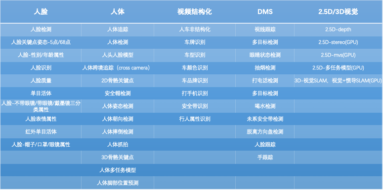
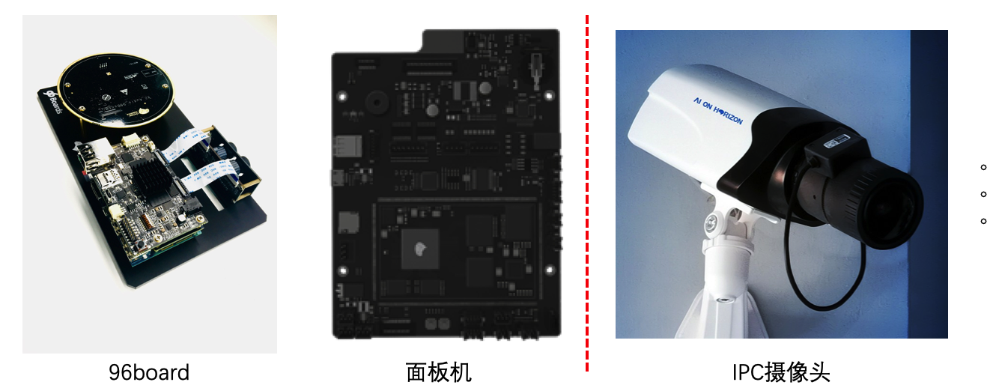
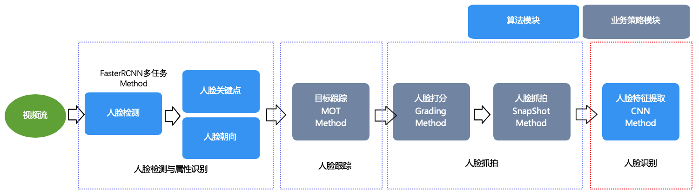
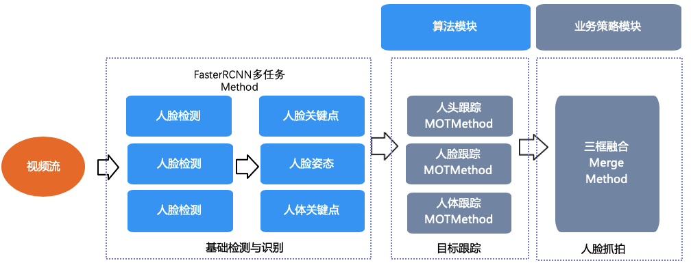
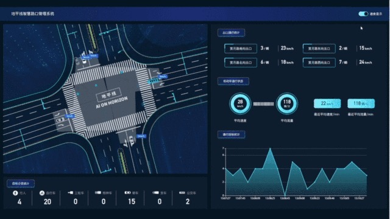
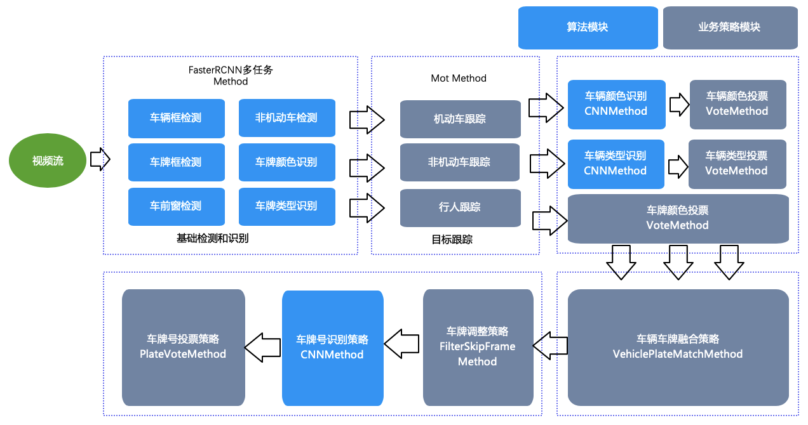
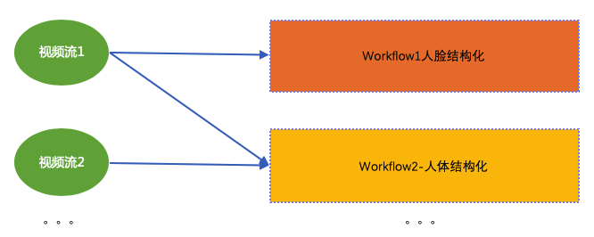

场景参考解决方案¶
整体概述¶
场景参考解决方案是在天工开物模型仓库(Model Zoo)中的产品算法之上，将地平线各种量产场景方案进行开放。下图是“天工开物”模型仓库（Model Zoo）产品算法开放列表。

这些产品算法涉及人脸、人体、车辆等多种类别，具备极高的算法质量和精度，可有效避免合作伙伴“重复发明轮子”，大幅节省算法训练和开发的时间与成本。
当前版本我们选取人脸，人体，车辆部分核心算法模型，开放了人脸结构化参考方案,人体结构化参考方案,人体行为分析参考方案,体感游戏参考方案,车辆结构化参考方案[代码暂未开放],手势识别六个解决方案以及一个复合的AI盒子场景参考方案。
这些参考方案在地平线X2系列96board/2610面板机参考硬件板卡或者X3系列X3-DVB板上都可以直接部署运行，未来会支持IPC等更多硬件板卡形态。

您也可以将这些参考方案轻松迁移到基于地平线芯片的其他硬件设备中。
人脸结构化参考方案¶
我们选取人脸检测，人脸5关键点，人脸姿态，年龄性别，口罩检测五个产品模型，附加MOT人脸跟踪，人脸打分以及人脸抓拍三个业务策略，构建一个完整的人脸抓拍Workflow。

其中使用XStream内置Method如下所示：
| Method | 类型 | 输入 | 输出 |
|---|---|---|---|
| FasterRCNNMethod | 算法 | 图像帧 | 人脸框、关键点、姿态 |
| MOTMethod | 策略 | 人脸框 | 带有trackID的人脸框及消失目标集合 |
| CNNMethod | 算法 | 带有trackID的人脸框人脸框、图像帧 | 年龄性别、口罩属性 |
| GradingMethod | 策略 | 人脸框、姿态、关键点 | 目标优选分值 |
| SnapshotMethod | 策略 | 图像帧、人脸框、目标优选分值 | 抓拍图列表 |
| CNNMethod | 算法 | 抓拍图列表 | 人脸特征 |
FasterRCNNMethod算法方法，我们采用MultiTask多任务实现方式，同时挂载人脸检测，人脸5关键点，人脸姿态三个模型。它可以针对输入图片进行结构化，输出图片中每个目标的人脸框、关键点、姿态.
MOTMethod：采用了基于IOU策略的MOT跟踪算法【@todo待补充策略算法链接】，它对输入时序化的人脸框进行跟踪，输出带有trackID的人脸框和消失目标的集合。
GradingMethod：是一个人脸框打分的策略模块，它综合考虑人脸框大小、关键点置信度，遮挡以及姿态等信息，输出单个目标的人脸框图片置信分数，用于后续优选抓拍。
SnapshotMethod：是一个抓拍的策略模块，基于MotMethod输出Tacklet以及GradingMethod输出的人脸框打分信息，在内存维持一个优选帧序列，针对一个Tracklet输出它的的抓拍图。
CNNMethod算法方法，包括年龄性别，口罩检测以及人脸特征提取三种模型，可以对输入的检测框或抓拍列表，输出图片中目标的属性。
在人脸抓拍workflow上，除了目前提供的性别/年龄属性，口罩检测等模型，还可以继续追加人脸活体、人脸质量等模型，进而丰富整个人脸结构化数据流。
在人脸结构化参考方案中，我们也提供了一个人脸识别Workflow，通过在SnapshotMethod抓拍策略后，追加CNNMethod来实现对抓拍人脸图的特征提取。

关于人脸结构化参考方案，详细参考README。
人体结构化参考方案¶
人体结构化参考方案，我们核心目标是对人检测与跟踪。我们选取人头检测，人脸检测，人体检测，人脸关键点，人脸姿态，人体关键点等数个产品模型，并通过MOT人头跟踪，MOT人体跟踪，MOT人体跟踪实现对人体分别进行跟踪，随后通过融合策略，实现三框的融合，最终完成对一个人体目标跟踪。

其中使用XStream内置Method如下所示：
| 模块 | 类型 | 输入 | 输出 |
|---|---|---|---|
| FasteRCNNMethod | 算法 | 图像帧 | 人脸人头人体框、人脸关键点和姿态、人体关键点 |
| MOTMethod | 策略 | 人脸框 | 带有trackID的人脸框及消失目标集合 |
| MOTMethod | 策略 | 人头框 | 带有trackID的人脸框及消失目标集合 |
| MOTMethod | 策略 | 人体框 | 带有trackID的人脸框及消失目标集合 |
| MergeMethod | 策略 | 人脸人头人体框、trackID | 融合后的人员ID |
FasterRCNNMethod：算法方法，我们采用MultiTask多任务实现方式，同时挂载人头检测，人脸检测，人体检测，人脸关键点，人脸姿态，人体关键点六个模型。它可以针对输入图片进行结构化，输出图片中每个目标的人脸人头人体框、人脸关键点和姿态、人体关键点.
MOTMethod：采用了基于IOU策略的MOT跟踪算法【@todo待补充策略算法链接】，它对输入时序化的人脸框、人头框、人体框分别进行跟踪，输出带有trackID的人脸框、人头框、人体框和消失目标集合。
MergeMethod：三框融合，它可以在跟踪过程中，考虑框之间遮挡，跳动，实现对单目标的人脸人头人体的融合，将独立跟踪的TrackID进行合并，为每个目标分配全局唯一的TrackID。
关于人体结构化参考方案，详细参考README。
人体行为分析参考方案¶
人体行为分析参考方案，我们核心目标是对人体进行检测以及行为分析。我们选取人头检测，人脸检测，人体检测，人体关键点， 摔倒检测五个模型，并通过MOT人体跟踪、行为分析、三框融合实现对人体的检测与行为分析。
其中使用Method如下所示：
| 模块 | 类型 | 输入 | 输出 |
|---|---|---|---|
| FasteRCNNMethod | 算法 | 图像帧 | 人脸人头人体框、人体关键点 |
| MOTMethod | 策略 | 人脸框 | 带有trackID的人脸框及消失目标集合 |
| MOTMethod | 策略 | 人头框 | 带有trackID的人脸框及消失目标集合 |
| MOTMethod | 策略 | 人体框 | 带有trackID的人脸框及消失目标集合 |
| MergeMethod | 策略 | 人脸人头人体框、trackID | 融合后的人员ID |
| CNNMethod | 算法 | 人体框、人体关键点 | 摔倒等行为属性 |
| BehaviorMethod | 策略 | 人体框、人体关键点 | 举手、站立、下蹲等行为属性 |
FasterRCNNMethod：算法方法，我们采用MultiTask多任务实现方式。它可以针对输入图片进行结构化，输出图片中每个目标的人脸人头人体框、人体关键点。
CNNMethod：算法方法,挂载摔倒检测模型，实现人体摔倒的检测识别。
MOTMethod：采用了基于IOU策略的MOT跟踪算法【@todo待补充策略算法链接】，它对输入时序化的人脸框、人头框、人体框分别进行跟踪，输出带有trackID的人脸框、人头框、人体框和消失目标集合。
MergeMethod：三框融合，它可以在跟踪过程中，考虑框之间遮挡，跳动，实现对单目标的人脸人头人体的融合，将独立跟踪的TrackID进行合并，为每个目标分配全局唯一的TrackID。
BehaviorMethod：根据人体关键点，分析是否举手、站立、下蹲等行为属性。
体感游戏参考方案¶
体感游戏参考方案，我们核心目标是通过分析人体的行为，与游戏进行互动。我们选取人头检测，人脸检测，人体检测，人脸关键点，人脸姿态，人体关键点，人体特征提取，人体行为分析等数个模型，实现对人体的检测与行为分析，从而控制游戏逻辑。目前支持CrappyBird、 PandaRun两款游戏，支持跳跃以及攻击两种行为。
其中使用Method如下所示：
| 模块 | 类型 | 输入 | 输出 |
|---|---|---|---|
| FasteRCNNMethod | 算法 | 图像帧 | 人脸人头人体框、人脸关键点和姿态、人体关键点 |
| MOTMethod | 策略 | 人脸框 | 带有trackID的人脸框及消失目标集合 |
| CNNMethod | 算法 | 图像帧、人体框 | 人体特征 |
| CNNMethod | 算法 | 人体特征 | 人体行为 |
FasterRCNNMethod：算法方法，我们采用MultiTask多任务实现方式，同时挂载人头检测，人脸检测，人体检测，人脸关键点，人脸姿态，人体关键点六个模型。它可以针对输入图片进行结构化，输出图片中每个目标的人脸人头人体框、人脸关键点和姿态、人体关键点.
CNNMethod：算法方法,挂载人体特征，人体行为模型，实现人体行为分析。
MOTMethod：采用了基于IOU策略的MOT跟踪算法，它对输入时序化的人脸框、人头框、人体框分别进行跟踪，输出带有trackID的人脸框、人头框、人体框和消失目标集合。
车辆结构化参考方案¶
本方案暂未对外开放 车辆结构化参考方案是地平线在车路协同领域的交付沉淀，它支持功能如下：
机动车相关检测：包括车辆，车牌，车前窗三种框检测，以及车体颜色，车牌颜色，车牌类型，车牌号的属性识别。
非机动车的检测和行人检测
机动车，非机动车，行人的跟踪以及框级别的融合
整体效果图如下所示：

其中使用XStream内置Method如下所示：
| 模块 | 类型 | 输入 | 输出 |
|---|---|---|---|
| FasteRCNNMethod | 算法 | 图像帧 | 机动车、非机动车、行人、车牌、车前窗、车牌颜色、车牌类型检测 |
| MOTMethod | 策略 | 机动车框、非机动车框、行人框、车前窗框 | 带有trackID的框及消失目标集合 |
| CNNMethod | 算法 | 图像帧、机动车框、车牌框 | 车颜色、车型、车牌号识别 |
| VoteMethod | 策略 | 待投票目标 | 按照Tracklet进行投票的结果 |
FasterRCNNMethod：算法方法，我们采用MultiTask多任务实现方式。它可以针对输入图片进行结构化，检测图片中的机动车、非机动车、行人、车前窗、车牌、车牌颜色、车牌类型。
MOTMethod：采用了基于IOU策略的MOT跟踪算法【@todo待补充策略算法链接】，它对输入时序化的机动车框、非机动车框、行人框、车前窗框分别进行跟踪，输出带有trackID的框和消失目标集合。
CNNMethod：算法方法,挂载车型识别，车颜色识别，车牌号识别三个模型，实现对机动车进行车体颜色、车型的识别，针对车牌进行车牌号识别。
VoteMethod：针对一个Tracklet里面的多张图片的属性进行投票，支持多数投票等投票策略。在车辆结构化方案中，我们对车辆类型，车辆颜色，车牌颜色进行众数投票，基于多帧数据，来提高最终识别的准确性。
该参考方案也自定义以下策略Method：
| 模块 | 类型 | 输入 | 输出 |
|---|---|---|---|
| FilterSkipFrameMethod | 策略 | 机动车框、车牌框 | 跳帧过滤后的框 |
| VehiclePlateMatchMethod | 策略 | 机动车框、车牌框 | 融合后的机动车框与车牌框 |
| PlateVoteMethod | 策略 | 车牌号 | 投票选择后的车牌号 |
完整的Workflow结构图如下所示：

关于车辆结构化参考方案，详细参考README。
手势识别参考方案¶
手势识别是互动娱乐、智能车载等领域中的常用功能之一。AI-Express 2.4.0版本中，结合地平线基于序列的行为识别模型，给出了手势识别参考方案。方案可以参考：https://developer.horizon.ai/forum/id=5f30f806bec8bc98cb72b288
AI盒子场景参考方案¶
在一些AI盒子等复合应用场景，需要同时支持多路输入和多Workflow数据流，并可以通过配置文件来控制每一路输入与Workflow之间的映射关系。
如下实例：

视频流1配置为进行人脸结构化和人体结构化，而视频流2仅配置进行人体结构化。
针对这种负责场景，AI Express支持灵活配置视频流的路数，workflow的个数以及视频流与workflow之间的映射关系。
注意：多路输入和多Workflow数据流方案，同一路视频在各个workflow中的智能化计算流程是完全独立。如果多个workflow有共同Method，会被同时计算多次，不支持Workflow间的计算结果共享。
关于多路输入和多Workflow数据流方案，详细参考README 以及 https://developer.horizon.ai/forum/id=5f2be161740aaf0beb31234a
AI盒子场景，添加了一个示例，通过RTSP协议从IPC中获取4路1080P的264码流，在X3上硬件解码，然后送入网络模型进行分析，图像与检测结果通过vo模块输出，显示器通过HDMI接口连接到X3板子就可以看到实际效果。